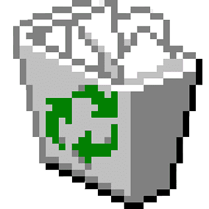
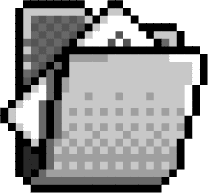
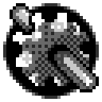

Recycle Bin
Profile
Social Media
Portfolio
Recycle Bin
✕
Open
Restore
Empty
Places
Recycle Bin 🗑️
Programs 🖥️
Documents 📄
Settings ⚙️
Recycle Bin
2 items
🗑️
ideas.txt
🗑️
NOT my nudes.7z
Profile.prof
✕
Social Media.txt
✕
Instagram
YouTube
LinkTree
Portfolio.docu
✕
!UNDER CONSTRUCTION!
Programs
✕
Open
Explore
Places
Recycle Bin 🗑️
Programs 🖥️
Documents 📄
Settings ⚙️
Programs
3 items
📁
Portfolio
📁
Music Player
📁
Social Links
Documents
✕
Open
Find
Places
Recycle Bin 🗑️
Programs 🖥️
Documents 📄
Settings ⚙️
Documents
3 items
📄
Profile.prof
📄
Resume.docu
📄
Notes.txt
Settings
✕
Open
Customize
Places
Recycle Bin 🗑️
Programs 🖥️
Documents 📄
Settings ⚙️
Settings
3 items
⚙️
Appearance
⚙️
Sound
⚙️
Desktop
Now Playing
No song selected
⏮
▶
⏭
🔁
🔉
20%
🔊

start
12:00 PM
Hicko OS
Programs
Documents

Settings
Shut Down
Your browser does not support the audio element.